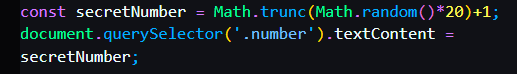

Nothing Important besides the method to generate random number:

Math.trunc is to make it a interger, and remove all the noise behind them.
Math.random is to generate a random number between 0 - 1
multipled by 20 means the random number will be between 0 - 19
add 1 at the end means the random number will be between 1 - 20